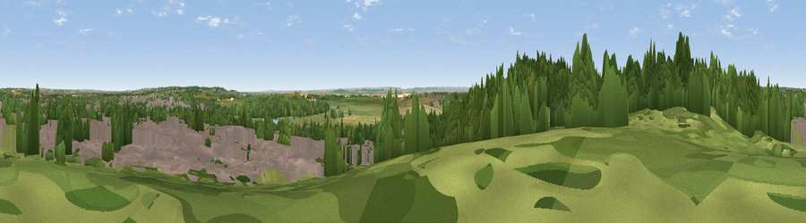

Viewpoint near Vange
#40242 in England · top 55% of its area beats it · near VangeWhere it is
The exact computed spot (TQ 72075 87575). Click the marker for map links.
The view, rendered

A 360° render of this exact spot computed from the terrain model, tree cover and land cover — summer colours, afternoon light, calibrated against photographs of famous viewpoints. Real trees, hedges and buildings will differ in detail.
The panorama
Grey silhouette: terrain skyline in each direction (720 bearings, Earth curvature and refraction included). Dashed green: skyline with trees (+15 m) and buildings (+8 m) as obstacles. Blue strip: how far the ground is visible on each bearing.
Where the view opens
Wedge length = distance to the farthest visible ground on that bearing (vegetation-aware). Rings at 10, 25 and 50 km.
What fills the view
33% built-up · 32% woodland · 27% grassland · 6% cropland · 1% water ·
Angular shares of the visible panorama (visual magnitude), not map area. Landscape diversity 0.59 (0–1 Shannon).
Key numbers
More beautiful places nearby
The staircase of upgrades: each row has a higher view potential than everything closer. Driving times are estimates from straight-line distance, calibrated against real road routing — check an actual route before setting out.
| Place | Direction | Drive | Score |
|---|---|---|---|
| Viewpoint near Vange | WSW · 0 km | ~1 min | 58.2 |
| Viewpoint near South Benfleet | E · 7 km | ~14 min | 59.8 |
| Viewpoint near Hadleigh | E · 8 km | ~16 min | 61.0 |
| Viewpoint near Birling | SSW · 26 km | ~41 min | 65.1 |
| Viewpoint near Shipbourne | SSW · 38 km | ~56 min | 66.2 |
| Viewpoint near Charing | SSE · 43 km | ~63 min | 68.6 |
| Viewpoint near Westwell | SSE · 47 km | ~68 min | 72.2 |
| Viewpoint near Lympne | SSE · 65 km | ~87 min | 72.6 |
51.56080, 0.48102 · source: screening · position refined by local search. Computed location — check access rights before visiting.